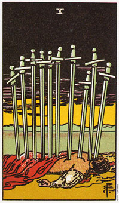

宝剑十意味在另一个开始之前某种状况的结束。
宝剑十的牌描绘的是一个难以忘怀且不吉利的意象。有一个人脸朝下的躺在地上，而且背部和颈子共插了十把剑。天空是一片漆黑，只有远方隐藏的透露出一点象征日出光线。那一池水沉静如玻璃，而周遭杳无人踪。
这张牌暗示在某种情况下，你已到了最低潮的时刻，但远方微弱的阳光暗示着，尾随这艰困时刻的将会是新的以及更好的事物。
你对人生的思想或信念导致你此刻的境遇，从这里，你的思想将会带领你到任何你认为能够去的地方。
它或许能帮助你从物质环境、对生命的信念中抽离，以便能巨细靡遗的检视它们。你也可能是被一些无用的事物，或对生命具破坏性的信念给绊住了。
通常，在这种低潮的时刻，你会设法去抓住哪些你平日弃而不用的事物及态度。要让你自身与这些事物分离，理论上听起来是满简单的，但是真要做起来可能有很多危险性，在真实生活及想象上均然。这里所教导的是屈从，并且容许改变发生。
大体上的意义
宝剑十代表一种情况的结束。可能指两性关系的结束，或某关系中的一个阶段的结束，或一项事业的失败。你生命中的某些事物已经结束了，接受这个事实有助于新事物来取代旧的的。在健康的分析上，这张牌指的是脊髓毛病、颈部僵硬或喉咙吞噬困难。
如果宝剑是或死亡、高塔、审判等牌一起出现的话，它可能象征肉体的死亡。几年前我帮一个女人占卜，她在剩下的一个小时内花十分钟问了一连串的问题，而最后一个问题，是有关她父亲的健康情况。
在她的健康分析中有宝剑六和十、死亡、高塔和审判牌，然后她又加了一张空白牌在结果的位置。
我花了好几分钟的时间来研究这些牌，已做出绝对的认识。而实在是找不出另外的可能，于是我只得告诉她，有个很明显的可能性显示出来，她父亲会在下个月去世。我小心翼翼的向她说明这件事情，以免惊吓到她。而她却是以微笑回报我。
“好吧，我知道他的来日无多了。他正在医院里面以我们的要求打吗啡。我只是想知道在牌上是不是看得出来。”
如果没有其他这几张牌一起出现的话，十可能只是暗示一种改变，而如果出现着几张牌的话，肯定是最终的改变。
两性关系上的意义
宝剑时刻能代表整个关系的结束，或是其中一个阶段的结束。例如，当一个婴儿出生，只有两个人的互动关系就会因他的存在而结束，并转变为包含了另外一个人的新关系。有时候十也意指分手之前的低潮经验。
倒立的宝剑十
倒立的宝剑十意味在一段艰困的时光中，得到暂时的喘息，你应该明智的利用这个机会让你本身或处境做一个真实的改变。如果你不图谋改变的话，情况还是又回到以前的样子，而是这张牌还是会以直立的姿态出现在你的分析当中。
这可不是一个可以松懈下来的时刻，而是做真正改变的时候。当牌倒立时，表示你已走到了谷地，倒是没有任何事物是会自动改善，现在正是你迈开脚步，朝一个崭新的方向出发的时候了。